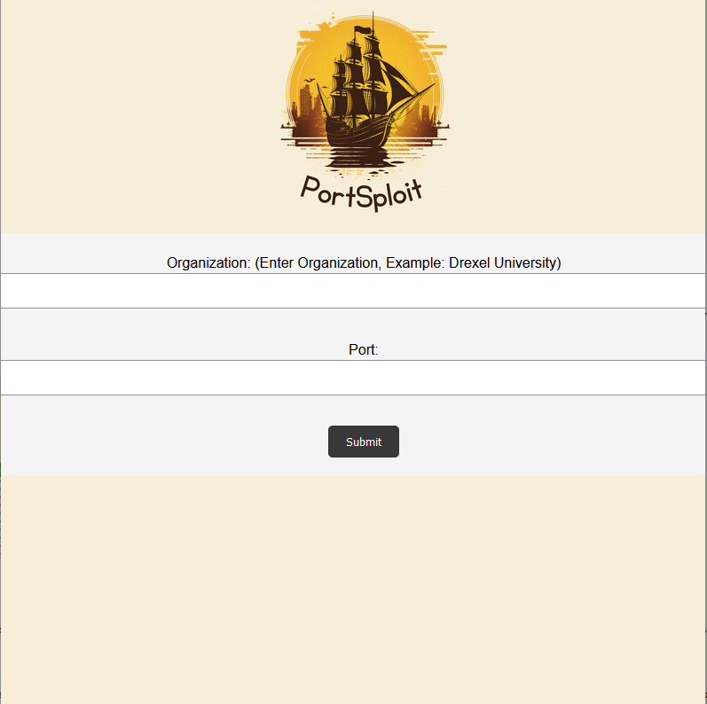
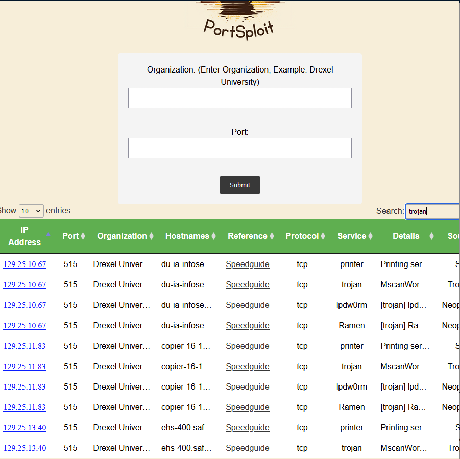
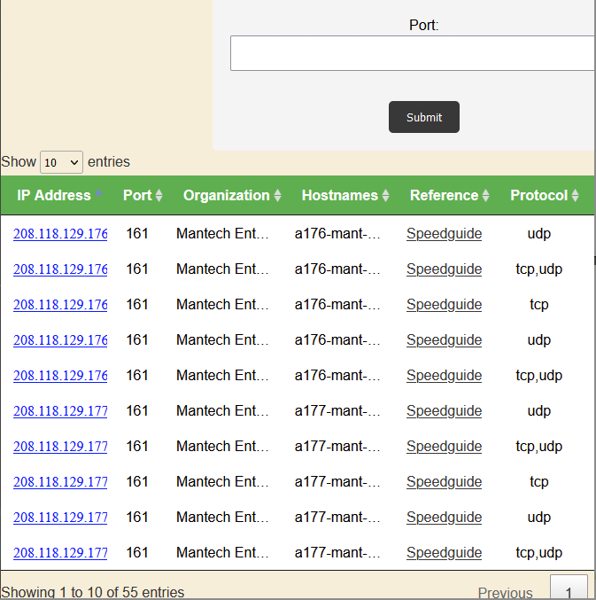
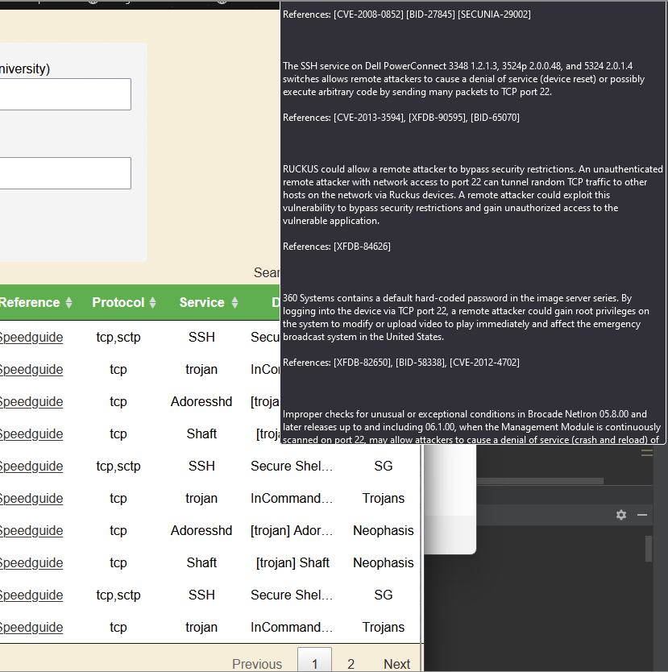

Portsploit is a project created during my senior year of my college career.
Portsploit is a one-stop shop web application reconnaissance tool that allows users to input an organization and receive information about accessible IPs and open ports, pairing that with a knwon vulnerabilities database.
Ports are basic endpoints used for communication in a network that allows data to be sent and recieved.
Open ports are a risk to a network because this gives a potential access point for attackers to gain unauthorized access.
Having open ports on a network can leave attackers to deploy an array of attacks including port/packet sniffing, a DoS (denial of service) attack, and even exploiting known vulnerabilities that the port has.
Investigating different devices and vulnerabilities across the internet can result in cross-referencing multiple sites to get the information one needs.
Portsploit aims to consolidate this inforamtion and combine the power of multiple tools to make reconnaissance and vulnerability hunting straight forward.
Portsploit will utilize the power of Shodan to pull information on organizations such as accessible IPs, open ports, and other metadata and present it to the user.
PortSploit will combine this data from the SHodan API with a local database containing port vulnerability information from SpeedGuide.net.
The result is a view that provides a user with information about an organization’s open ports and potential vulnerabilities, all from one search.
Portsploit also conveniently provides IP address information next to vulnerable ports, further simplifying the reconnaissance process.
With the results, the user is able to sort the table and search for specific keywords.
Additionally, if there is an IP address that the user is interested in, they are able to click on that specific IP address to only see that IP address from the associated organization.
Overall, PortSploit makes host discovery and vulnerability hunting a fast, easy, and more convenient process allowing for professionals to spend more time exploiting and less time hunting.
Through the application, you can run a search on any organization that is found on shodan as well as specify any port if you are looking for something specific.

The output that is generated should generate all possible IPs on the network.
Some other data present includes port number, hostname, where the data is references from, protocol, service, details about the service, and the source as well.
You can use the search bar in the top right to narrow a search by a specific keyword or number to get more specific results.
Each column can be alphabetized if desired.


If there is a port that is uncommon or you don’t understand, you can click on the reference link to view further information that is associated with that specific port.
Another feature that we have is, when hovering your mouse over details, there will be a section that expands that shows you everything within that cell.
